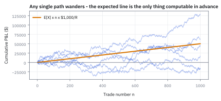

1.3 Expected Value
Expected value คือค่าเฉลี่ยของผลลัพธ์ที่ถ่วงด้วยโอกาส เป็นจุดสมดุลของ PMF และบอกว่าทำซ้ำไปนาน ๆ จะได้เฉลี่ยครั้งละเท่าไร ไม่ได้บอกว่าครั้งหน้าจะได้เท่าไร
กลยุทธ์ TSLA จากหน้า PMF จบได้แค่สามแบบ: เสีย \$1,000 (โอกาส 55%) เท่าทุน (15%) หรือได้ \$2,000 (30%) ผู้จัดการพอร์ตอ่านรายงานที่เขียนว่า “กลยุทธ์นี้ได้เฉลี่ยครั้งละ \$50” แล้วถามสองข้อ: \$50 มาจากไหนในเมื่อไม่มีการซื้อขายครั้งไหนจ่าย \$50 และถ้าค่าใช้จ่ายครั้งละ \$20 ซื้อขายวันละ 4 ครั้งตลอดหนึ่งปี จะคาดว่าได้สุทธิเท่าไร
ลองตอบก่อนเปิดเฉลย
\$50 คือค่าเฉลี่ยแบบถ่วงโอกาส: $(-1{,}000)(0.55)+0(0.15)+2{,}000(0.30)=-550+600=\$50$ มันเป็นจุดสมดุลของผลลัพธ์ ไม่จำเป็นต้องเป็นผลที่ออกได้จริง หักค่าใช้จ่ายเหลือ \$30 ต่อครั้ง ปีหนึ่งมีวันซื้อขายประมาณ 252 วัน จึงซื้อขาย $4\times252=1{,}008$ ครั้ง คาดว่าได้สุทธิ $1{,}008\times\$30=\$30{,}240$ และจุดที่น่ากลัวคือ ค่าใช้จ่าย \$20 กินกำไรเฉลี่ยไปถึง 40%
ภาพรวมก่อนลงสูตร
PMF บอกว่าแต่ละผลลัพธ์มีโอกาสเท่าไร แต่บนโต๊ะเทรดเราต้องการตัวเลขเดียวที่ตอบว่า “ทำแบบนี้ไปเรื่อย ๆ ได้หรือเสียเฉลี่ยครั้งละเท่าไร” ตัวเลขนั้นคือ expected value เขียนว่า $\mathbb E[X]$ ได้จากการคูณแต่ละผลลัพธ์ด้วยโอกาสของมันแล้วบวกกัน
ภาพที่ช่วยที่สุดคือไม้กระดก: วางผลลัพธ์เป็นตำแหน่งบนไม้ วางโอกาสเป็นน้ำหนัก expected value คือตำแหน่งจุดหมุนที่ทำให้ไม้สมดุล น้ำหนักขาดทุนก้อนใหญ่ที่ −1R ถูกถ่วงด้วยน้ำหนักกำไรที่เล็กกว่าแต่อยู่ไกลกว่าที่ +2R จุดสมดุลจึงอยู่เลยศูนย์ไปนิดเดียว
หน้านี้จะสร้างนิยามจากการนับ ดูว่าค่าเฉลี่ยจากข้อมูลวิ่งเข้าหาค่านี้อย่างไรและช้าแค่ไหน ใช้ linearity เปลี่ยนหน่วยและหักต้นทุน มองโอกาสเป็นค่าเฉลี่ยของตัวแปร 0/1 รวมค่าเฉลี่ยของหลายครั้ง แล้วหาอัตราชนะที่คุ้มทุน
รูป — ไม้กระดกที่สมดุลที่ 0.05R
ศัพท์ที่ใช้ในหน้านี้
- expected value
- $\mathbb E[X]=\sum_i x_i p_i$ ค่าเฉลี่ยตาม distribution ใช้วัดว่าการเดิมพันหรือกลยุทธ์ได้เปรียบหรือเสียเปรียบต่อครั้ง
- sample mean
- ค่าเฉลี่ยของข้อมูลที่เกิดขึ้นจริง ใช้ประมาณ expected value ที่ไม่รู้ และจะแกว่งรอบมันมากหรือน้อยตามจำนวนข้อมูล
- linearity
- $\mathbb E[aX+b]=a\mathbb E[X]+b$ และ $\mathbb E[A+B]=\mathbb E[A]+\mathbb E[B]$ ใช้เปลี่ยนหน่วย หักต้นทุน และรวมหลายครั้งโดยไม่ต้องรู้ความสัมพันธ์
- indicator
- ตัวแปรที่เป็น 1 เมื่อเหตุการณ์เกิดและ 0 เมื่อไม่เกิด ค่าเฉลี่ยของมันคือโอกาสของเหตุการณ์ ใช้แปลงคำถามเรื่องการนับเป็นคำถามเรื่องค่าเฉลี่ย
- edge
- กำไรเฉลี่ยต่อครั้งหลังหักต้นทุน เป็นตัวเลขที่ตัดสินว่ากลยุทธ์ควรทำต่อหรือไม่
- breakeven win rate
- อัตราชนะที่ทำให้กำไรเฉลี่ยเท่ากับศูนย์ ใช้วัดว่าสมมติฐานมีที่ว่างให้ผิดได้แค่ไหน
สัญลักษณ์ ความหมาย และหน่วย
| สัญลักษณ์ | ความหมาย | หน่วย |
|---|---|---|
| $X$, $Y=1{,}000X$ | ผลการซื้อขายหนึ่งครั้ง | R, ดอลลาร์ |
| $x_i$, $p_i$ | ผลลัพธ์แบบที่ $i$ และโอกาสของมัน | R, ไม่มีหน่วย |
| $\mathbb E[X]$, $\overline X_N$ | ค่าเฉลี่ยตาม distribution, ค่าเฉลี่ยจากข้อมูล $N$ ครั้ง | R |
| $\mathbf 1_{\mathrm{win}}$ | 1 ถ้าครั้งนั้นชนะ 0 ถ้าไม่ชนะ | ไม่มีหน่วย |
| $w$ | โอกาสชนะ (ได้ +2R) | ไม่มีหน่วย |
| $n$ | จำนวนการซื้อขายในหนึ่งปี | ครั้ง |
ขั้นที่ 1 — จินตนาการ 100 ครั้ง แล้วเขียนเป็นสูตร
รายงานที่บอก “เฉลี่ยครั้งละ \$50” สร้างกลับได้ด้วยการนึกถึงการซื้อขาย 100 ครั้งที่ออกตามสัดส่วนพอดี: แพ้ 55 ครั้ง เท่าทุน 15 ครั้ง ชนะ 30 ครั้ง แล้วหาค่าเฉลี่ยธรรมดา
การหารด้วย 100 เปลี่ยนจำนวนครั้ง 55, 15, 30 ให้เป็นโอกาส 0.55, 0.15, 0.30 ตัวเลข 100 จึงตัดกันหายไป เหลือแค่ “ผลลัพธ์คูณโอกาส แล้วบวก” นิยามนี้จึงไม่ต้องรอให้ซื้อขายครบร้อยครั้งจริง
โอกาสไม่มีหน่วย ค่าเฉลี่ยจึงมีหน่วยเดียวกับผลลัพธ์ คือ R หรือดอลลาร์ ค่า 0.05R ไม่ใช่ผลที่ออกได้ เหมือนครอบครัวที่มีลูกเฉลี่ย 1.6 คน ไม่มีบ้านไหนมีลูก 1.6 คน มันคือจุดสมดุลของ PMF ตามรูปไม้กระดกด้านบน
รูป — 100 การซื้อขายในจินตนาการกับเงินรวม
ขั้นที่ 2 — ค่าเฉลี่ยจากข้อมูลวิ่งเข้าหา expected value แต่ช้า
ในชีวิตจริง เราไม่รู้ PMF เรามีแต่ผลการซื้อขายที่เกิดแล้ว คำถามคือค่าเฉลี่ยของข้อมูลเกี่ยวกับ $\mathbb E[X]$ อย่างไร ให้ $N$ เป็นจำนวนครั้งทั้งหมด และ $N_i$ เป็นจำนวนครั้งที่ได้ผลลัพธ์ $x_i$
บรรทัดที่สองเป็นแค่การจัดกลุ่มใหม่ รวมครั้งที่ได้ผลเดียวกันไว้ด้วยกัน จึงจริงกับข้อมูลชุดใดก็ได้ ส่วนลูกศรคือส่วนที่ต้องมีเหตุผลเพิ่ม: ถ้าการซื้อขายแต่ละครั้งเป็นอิสระ ใช้ PMF เดียวกัน และค่าเฉลี่ยมีค่าจำกัด สัดส่วนที่เห็นจะเข้าใกล้โอกาสจริง ผลนี้คือ law of large numbers
สิ่งที่ law of large numbers ไม่ได้บอกคือความเร็ว ค่าเฉลี่ยจาก $N$ ครั้งมักพลาดจาก $\mathbb E[X]$ ราว $1.32/\sqrt N$ R (ตัวเลข 1.32 คือ standard deviation ต่อครั้ง ซึ่งหน้า variance และ standard deviationจะคำนวณ) ที่ 1,000 ครั้งยังพลาดได้ราว 0.04R ซึ่งเกือบเท่ากับ edge 0.05R ทั้งก้อน กลยุทธ์ที่มี edge จริงจึงแสดงค่าเฉลี่ยติดลบหลัง 1,000 ครั้งได้ ตามรูปด้านล่าง
รูป — ค่าเฉลี่ยสะสมของสามชุดการซื้อขายจำลอง
ขั้นที่ 3 — เปลี่ยนหน่วยและหักต้นทุนด้วย linearity
ผู้จัดการอยากได้คำตอบเป็นดอลลาร์หลังค่าใช้จ่าย ไม่ใช่ R ก่อนค่าใช้จ่าย เราไม่ต้องสร้าง PMF ใหม่ เพราะการคูณด้วยค่าคงที่และการบวกค่าคงที่ทะลุเครื่องหมาย $\mathbb E$ ได้
บรรทัดที่สองแยกผลรวมออกเป็นสองก้อน ก้อนแรกคือ $\mathbb E[X]$ คูณ $a$ ก้อนหลังใช้ข้อเท็จจริงว่าโอกาสรวมกันได้หนึ่ง $b$ จึงออกมาเป็น $b$ เดิม นี่คือเหตุผลที่ต้นทุนคงที่ \$20 หักออกจากค่าเฉลี่ยได้ตรง ๆ
ระวังฐานของเปอร์เซ็นต์: ต้นทุน \$20 เท่ากับแค่ 2% ของ 1R แต่เท่ากับ $20/50=40\%$ ของกำไรเฉลี่ย ตัวเลขแรกฟังดูเล็ก ตัวเลขหลังบอกความจริงว่าต้นทุนกินความได้เปรียบไปเกือบครึ่ง ถ้าต้นทุนขึ้นถึง \$50 ความได้เปรียบหายหมด
ขั้นที่ 4 — โอกาสก็คือค่าเฉลี่ยของตัวแปร 0/1
ต่อไปเราอยากรู้ว่าในหนึ่งปีจะชนะกี่ครั้งโดยเฉลี่ย เครื่องมือที่ทำให้คำถามนับจำนวนกลายเป็นคำถามค่าเฉลี่ยคือ indicator: ตัวแปรที่เป็น 1 เมื่อเหตุการณ์เกิด และเป็น 0 เมื่อไม่เกิด
ค่าเฉลี่ยของตัวแปร 0/1 คือสัดส่วนครั้งที่มันเป็น 1 ซึ่งก็คือโอกาสของเหตุการณ์ ข้อเท็จจริงเล็ก ๆ นี้ทำให้ทุกเครื่องมือของค่าเฉลี่ยใช้กับโอกาสได้ด้วย จำนวนครั้งที่ชนะ $K$ คือผลรวมของ indicator ทีละครั้ง ค่าเฉลี่ยของผลรวมจึงเป็นผลรวมของ 0.30 จำนวน $n$ ตัว ถ้า $n=1{,}008$ จะชนะเฉลี่ย 302.4 ครั้ง
วิธีนี้คือที่มาของค่าเฉลี่ย $np$ ในหน้า binomial distribution และเป็นวิธีเดียวกับที่ใช้หาจำนวนเฉลี่ยของเหตุการณ์ที่ถูกคัดเลือกบางส่วน เช่น คำสั่งที่เข้ามาแล้วถูกจับคู่สำเร็จ ในหน้า Poisson thinning
ขั้นที่ 5 — ค่าเฉลี่ยของผลรวมบวกกันได้เสมอ แต่ผลคูณไม่ได้
การหาจำนวนชนะเฉลี่ยเมื่อครู่แอบใช้สมบัติสำคัญ คือค่าเฉลี่ยของผลรวมเท่ากับผลรวมของค่าเฉลี่ย ต้องเช็กว่าสมบัตินี้ต้องการ independence หรือไม่ เพราะการซื้อขายจริงมักเกี่ยวกัน ให้ $A$ และ $B$ เป็นผลของสองครั้ง และ $p_{ij}$ เป็นโอกาสที่ $A=a_i$ พร้อมกับ $B=b_j$
ในการพิสูจน์ เราแค่แยกผลรวมเป็นสองก้อน แล้วใช้ว่า $\sum_j p_{ij}$ คือโอกาสที่ $A=a_i$ ไม่ว่า $B$ จะเป็นอะไร ไม่มีจุดไหนต้องแยก $p_{ij}$ เป็นผลคูณ สมบัตินี้จึงจริงแม้สองครั้งจะเกี่ยวกันเต็มที่ ลองกรณีสุดขั้ว: ส่งสัญญาณเดียวกันเข้าสองบัญชี ผลสองบัญชีเหมือนกันทุกครั้ง ค่าเฉลี่ยรวมยังเป็น $0.05+0.05=0.10R$
ผลคูณต่างออกไป: กรณีเดียวกัน $\mathbb E[AB]=1.75$ แต่ $\mathbb E[A]\mathbb E[B]=0.0025$ ห่างกันเกือบเจ็ดร้อยเท่า การแยกค่าเฉลี่ยของผลคูณต้องให้ $p_{ij}$ แยกเป็นผลคูณได้ ซึ่งคือ independence พอดี เรื่องนี้ขยายในหน้าผลของ independence
ขั้นที่ 6 — จากต่อครั้งเป็นหนึ่งปี
ตอนนี้ตอบคำถามที่สองของผู้จัดการได้ ปีหนึ่งมีวันซื้อขายประมาณ 252 วัน มาจาก 365 วัน ลบเสาร์อาทิตย์ราว 104 วัน และวันหยุดตลาดหุ้นสหรัฐอีกราว 9–10 วัน ซื้อขายวันละ 4 ครั้งโดยใช้ 1R = \$1,000 ทุกครั้ง
เราใช้การบวกค่าเฉลี่ยที่เพิ่งพิสูจน์ 1,008 ครั้ง ไม่ต้องรู้ว่าผลแต่ละวันเกี่ยวกันหรือไม่ ตัวเลขนี้คือค่าคาดหวังทั้งปี ไม่ใช่ยอดที่จะเห็นตอนสิ้นปี ผลจริงจะแกว่งรอบ \$30,240 กว้างมาก ซึ่งหน้า variance จะวัดให้ และถ้านำกำไรกลับไปเพิ่มขนาด 1R ระหว่างปี ต้องสร้างแบบจำลองใหม่ เพราะผลแต่ละครั้งไม่ได้มีหน่วยเงินเท่ากันแล้ว
รูป — กำไรคาดหวังทั้งปีก่อนและหลังต้นทุน
รูป — เส้นค่าคาดหวังสะสมกับเส้นทางที่เกิดจริง

เมื่อกำไรเฉลี่ยต่อครั้งคงที่ ค่าคาดหวังสะสมเป็นเส้นตรง แต่ละเส้นทางที่เกิดจริงหรือจำลองจะแกว่งรอบแนวนั้น บางเส้นอยู่ใต้ศูนย์นานแม้แนวโน้มเป็นบวก เส้นตรงจึงเป็นค่าเฉลี่ยของเส้นทางจำนวนมาก ไม่ใช่เส้นทางที่จะเกิด
ขั้นที่ 7 — อัตราชนะที่คุ้มทุน และที่ว่างให้ผิด
คำถามสุดท้ายบนโต๊ะ: ถ้าอัตราชนะจริงต่ำกว่า 30% ที่สมมติไว้ จะต่ำได้แค่ไหนก่อนกลยุทธ์เลิกคุ้ม ให้โอกาสชนะเป็น $w$ ตรึงโอกาสเท่าทุนไว้ที่ 0.15 โอกาสแพ้จึงเป็น $0.85-w$ เพื่อให้รวมได้หนึ่ง
ทุกจุดเปอร์เซ็นต์ที่ย้ายจากแพ้ไปชนะเพิ่มค่าเฉลี่ย 3 เท่า เพราะเสียการขาดทุน 1R และได้กำไร 2R เส้นจึงชันเป็น 3 ก่อนต้นทุน จุดคุ้มทุนอยู่ที่ 28.33% หลังหักต้นทุน 0.02R ต่อครั้งเส้นเลื่อนลง จุดคุ้มทุนขยับมาที่ 29%
ที่ว่างให้ผิดจึงเหลือแค่ 1 จุดเปอร์เซ็นต์จาก 30% ถึง 29% แปลเป็นจำนวนครั้ง: ทั้งปีมี edge สุทธิ $1{,}008\times0.03=30.24R$ การชนะที่กลายเป็นแพ้หนึ่งครั้งเสีย 3R ดังนั้นแค่ราว 10 ครั้งจาก 1,008 ครั้งที่ออกผิดทางก็ลบกำไรคาดหวังทั้งปีได้ ตัวเลขนี้คือเหตุผลที่ต้องสงสัยอัตราชนะจาก backtest ให้มาก
รูป — กำไรเฉลี่ยต่อครั้งเมื่ออัตราชนะเปลี่ยน
จุดที่พลาดแล้วได้คำตอบผิดโดยไม่รู้ตัว
เฉลี่ยชื่อผลลัพธ์แทนการถ่วงโอกาส: $(-1+0+2)/3=0.33R$ สูงกว่าคำตอบจริง 0.05R เกือบเจ็ดเท่า สูตรนั้นแอบให้ทุกแถวมีโอกาส 1/3 ซึ่งเป็นอีกกลยุทธ์หนึ่ง
ค่าเฉลี่ยของฟังก์ชันไม่เท่ากับฟังก์ชันของค่าเฉลี่ย: ถ้าผู้จัดการได้ส่วนแบ่งเฉพาะครั้งที่มีกำไร สิ่งที่ต้องเฉลี่ยคือ $\max(X,0)$ ได้ $\mathbb E[\max(X,0)]=2(0.30)=0.60R$ ไม่ใช่ $\max(\mathbb E[X],0)=0.05R$ ต่างกันสิบสองเท่า ความไม่เท่ากันแบบนี้คือเหตุผลที่สัญญาซึ่งจ่ายเฉพาะด้านบวก เช่น option มีมูลค่ามากกว่าที่ค่าเฉลี่ยตรง ๆ บอก
เปลี่ยนขนาดเดิมพันตามผล: แทงทบทีละสองเท่าจนชนะ ดูเหมือนได้ \$1 แน่นอน แต่ลองเกมเหรียญยุติธรรมสิบตา: โอกาส $1023/1024$ จะชนะก่อนครบและได้ \$1 โอกาส $1/1024$ แพ้หมดและเสีย $1+2+\cdots+512=\$1{,}023$ ค่าเฉลี่ยคือ $1023/1024-1023/1024=0$ พอดี การจัดลำดับเดิมพันเปลี่ยนรูปร่างผลลัพธ์ได้ แต่สร้าง edge จากเกมที่ไม่มี edge ไม่ได้ (martingale betting system)
ค่าเฉลี่ยที่ไม่มีอยู่จริง: เกม St. Petersburg โยนเหรียญจนออกหัว ถ้าออกครั้งที่ $k$ ได้ $2^k$ ดอลลาร์ ด้วยโอกาส $2^{-k}$ ทุกกรณีเพิ่มค่าเฉลี่ย \$1 รวมไปไม่สิ้นสุด ค่าเฉลี่ยของข้อมูลจากเกมแบบนี้จะไม่นิ่ง ไม่ว่าเก็บข้อมูลนานเท่าไร ผลตอบแทนที่หางหนักมากมีปัญหาแบบเดียวกันในระดับที่เบากว่า
ใช้ทำอะไรบนโต๊ะจริง
งบประมาณกำไรขาดทุนของโต๊ะเทรดเริ่มจากสามตัวเลขในหน้านี้: edge ต่อครั้งหลังต้นทุน จำนวนครั้งต่อปี และอัตราชนะที่คุ้มทุน ทีมความเสี่ยงจะถามเสมอว่าที่ว่างระหว่างอัตราชนะที่สมมติกับอัตราที่คุ้มทุนกว้างแค่ไหน และ edge นั้นวัดจากข้อมูลกี่ครั้ง ตามรูปค่าเฉลี่ยสะสม ข้อมูล 1,000 ครั้งยังแยก edge 0.05R ออกจากศูนย์ได้ไม่ชัด การทดสอบเรื่องนี้อย่างเป็นระบบอยู่ในหน้า hypothesis testing และ Sharpe ratio
โจทย์ตรวจความเข้าใจ
1. PMF เดิม แต่ต้นทุนขึ้นเป็น 0.035R ต่อครั้ง โดย 1R = \$1,000 และซื้อขาย 1,008 ครั้งต่อปี กำไรเฉลี่ยสุทธิต่อครั้งและทั้งปีเป็นเท่าไร และอัตราชนะที่คุ้มทุนหลังต้นทุนคือเท่าไร
เฉลย
ต่อครั้ง: $0.05-0.035=0.015R=\$15$ ทั้งปี: $1{,}008\times\$15=\$15{,}120$ จุดคุ้มทุน: $3w-0.85-0.035=0$ ได้ $w=0.885/3=29.5\%$ ที่ว่างให้ผิดเหลือ 0.5 จุดเปอร์เซ็นต์ ต้นทุนที่ขึ้นทำให้จุดคุ้มทุนขยับเข้าหาสมมติฐานเสมอ
2. วงล้อมีสี่ช่องขนาดเท่ากัน ให้รางวัล \$0, \$0, \$0 และ \$40 ค่าหมุนครั้งละ \$8 รางวัลเฉลี่ย กำไรเฉลี่ยต่อครั้ง และค่าหมุนที่ทำให้กำไรเฉลี่ยเป็นศูนย์คือเท่าไร
เฉลย
รางวัลเฉลี่ย $0(3/4)+40(1/4)=\$10$ ใช้ linearity หักค่าหมุนได้กำไรเฉลี่ย $10-8=\$2$ ต่อครั้ง ค่าหมุนที่คุ้มทุนคือ \$10 แต่ผู้เล่นสามในสี่ครั้งเสีย \$8 ค่าเฉลี่ยบวกไม่ได้แปลว่าคนที่มีเงินจำกัดควรเล่น
3. จำนวนการซื้อขายในปีหน้าไม่แน่นอน: 908 หรือ 1,108 ครั้ง โอกาสเท่ากัน และจำนวนนี้ไม่ขึ้นกับผลการซื้อขาย แต่ละครั้งได้เฉลี่ย \$50 ก่อนต้นทุน กำไรคาดหวังทั้งปีก่อนต้นทุนคือเท่าไร
เฉลย
แยกสองกรณีก่อน: ถ้า 908 ครั้ง คาดว่าได้ $908\times\$50=\$45{,}400$ ถ้า 1,108 ครั้ง คาดว่าได้ $\$55{,}400$ ถ่วงด้วยโอกาสครึ่งหนึ่งเท่ากัน ได้ $\$50{,}400$ ซึ่งเท่ากับ \$50 คูณจำนวนครั้งเฉลี่ย 1,008 พอดี ผลแบบ “ค่าเฉลี่ยต่อครั้งคูณจำนวนครั้งเฉลี่ย” นี้มีชื่อและเงื่อนไขของมันในหน้า random sums และ Wald's identity
คำนวณซ้ำด้วย JavaScript
เปิดดูโค้ด
const pmf = [[-1, 0.55], [0, 0.15], [2, 0.30]];
const E = f => pmf.reduce((s, [x, p]) => s + f(x) * p, 0);
const meanR = E(x => x);
console.log(meanR); // 0.05
console.log(E(x => 1000 * x - 20)); // 30 (linearity)
console.log(E(x => (x === 2 ? 1 : 0))); // 0.30 (indicator)
console.log(E(x => x * x), meanR ** 2); // 1.75 0.0025
console.log(E(x => Math.max(x, 0))); // 0.60
const n = 4 * 252; // 1008 ครั้ง
console.log(n * 50, n * 20, n * 30); // 50400 20160 30240
console.log(0.85 / 3, 0.87 / 3); // 0.2833 0.29
console.log(n * 0.03 / 3); // ≈ 10 ครั้งที่พลิกจากชนะเป็นแพ้
// แทงทบสิบตาในเกมเหรียญยุติธรรม
const pLoseAll = 1 / 1024;
console.log((1 - pLoseAll) * 1 + pLoseAll * -1023); // 0สิ่งที่ควรตอบได้หลังอ่าน
- $\mathbb E[X]=\sum_i x_i p_i$ คือจุดสมดุลของ PMF กลยุทธ์ TSLA ได้ 0.05R หรือ \$50 ต่อครั้ง ซึ่งไม่ใช่ผลที่ออกได้จริง
- ค่าเฉลี่ยจากข้อมูลเข้าหา expected value ตาม law of large numbers แต่ช้า ที่ 1,000 ครั้งยังพลาดได้ราว 0.04R ซึ่งใหญ่พอ ๆ กับ edge
- linearity ให้เปลี่ยนหน่วยและหักต้นทุนได้ตรง ๆ และค่าเฉลี่ยของผลรวมบวกกันได้โดยไม่ต้องใช้ independence แต่ค่าเฉลี่ยของผลคูณต้องใช้
- โอกาสคือค่าเฉลี่ยของ indicator จึงหาจำนวนครั้งเฉลี่ยได้ด้วยการบวก เช่น ชนะเฉลี่ย 302.4 ครั้งจาก 1,008 ครั้ง
- ปีหนึ่งคาดว่าได้สุทธิ \$30,240 แต่อัตราชนะที่คุ้มทุนหลังต้นทุนคือ 29% ห่างจากสมมติฐานแค่ 1 จุดเปอร์เซ็นต์
expected value บอกจุดศูนย์กลาง แต่ไม่บอกว่าผลจริงกระจายห่างจากมันแค่ไหน หน้าถัดไป variance และ standard deviation จะวัดการกระจายนั้น แล้วตอบว่ากลยุทธ์ที่ได้เฉลี่ยบวกยังมีโอกาสจบปีขาดทุนเท่าไร